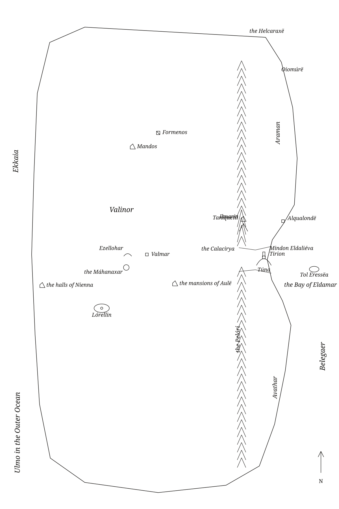
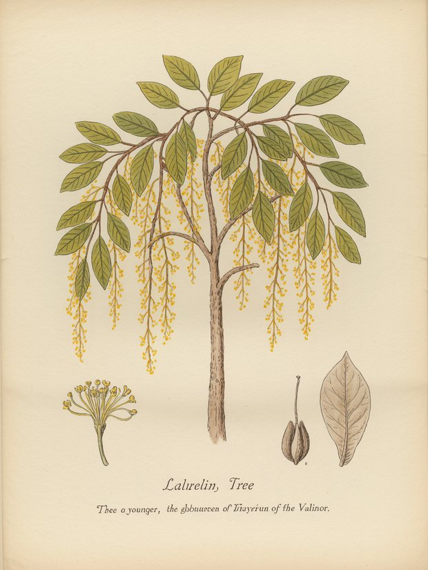

The Arda Archive · Valinor — the Realm of the Valarcccxxxiii
◌
Valinor — the Realm of the Valar
divine realm · Ainur & Eldar · Y.T. → beyond the world's change

Its bounds
Beyond Belegaer in the uttermost West, walled by the Pelóri, highest of mountains, raised as a fence after Melkor cast down the Lamps; the Calacirya cut to let the Trees' light reach the coast.a
Its history
Founded after the ruin of Almaren; lit by the Trees through the Noontide of the Blessed Realm; darkened by Melkor and Ungoliant; closed against the Noldor by the Doom of Mandos; opened once in wrath at Eärendil's embassy; hidden for ever from mortal seas at the Downfall.b
Its governance
Rule of the Valar in council: Manwë Súlimo is 'first of all Kings, lord of the realm of Arda'; doom is spoken in Máhanaxar; each Vala keeps a demesne (Yavanna's pastures, Oromë's woods, Mandos in the north).c
Whose hand
the archived
What the corpus says
“the Dwarves and the Orcs, and of the lands in which their history is set, Valinor beyond the western ocean, and”e
“secretly out of the Guarded Realm came into the woodlands south of Teiglin. There before the”f
“region which is called Valinor. There in the Guarded Realm they gathered”g
a The archive's reading — [I-H]
b The archive's reading — [I-H]
c The archive's reading — [C]
d The ruling — own work — drawn by this archive's own generators from the corpus [C]The licence for this drawing — what the corpus fixes, and what the archive chose.
e The text — The Book of Lost Tales Part One · l.33[C]
f The text — Unfinished Tales of Numenor and Middle Earth · l.2682[C]
g The text — Morgoths Ring · l.2114[C]
☞AP·vThe
A triskele boss — the archive's own hand
Volume I · Realmscccxxxiv
◌
The name stands in 4,945 cited lines, in 156 of the corpus's 192 texts — most often in The Book of Lost Tales Part One (413), The Shaping of Middle Earth (391), The Lost Road and Other Writings (374).h
The drafts against the published text
2,210 cited lines stand in 13 volumes of the drafts and 716 in 15 of the published books — the record thinned as Tolkien revised.i
The archive's second drawing of Valinor — the Realm of the Valar

The archive's third drawing of Valinor — the Realm of the Valar
“many went north and entered the guarded realm of Thingol and were merged” — the name is near this line and the archive does not assert that it is this record.l
Named in the same lines
Melkor (Morgoth) (113), Ulmo (44), Manwë Súlimo (42), Oromë Aldaron (39) — a shared line is a fact about the line, not a claim that the two met.m
counted from corpus lines that name BOTH records. A shared line is a fact about the line, not a claim that the two met; `eg` names a line a reader can open. [C]
By its name
Valinor is Early Qenya.n
What was looked for and not found
a concordance headword bound to this route — searched over 937 headwords in site/arda_concordance.json, and nothing was found.o
h Counted — site/arda_apparatus.json[C]
i Counted — site/arda_apparatus.json[C]
j Counted — site/arda_apparatus.json[C]
k Counted — site/arda_apparatus.json[C]
l The line — The War of the Jewels · l.801[C]
m Counted — site/arda_apparatus.json[C]
n The lexicon — https://eldamo.org/content/words/word-2425770369.html[EXT]
o The search — site/arda_apparatus.json[C]
☞AP·vjWoodmen
Seven stars — the archive's own tailpiece
Volume I
Valinor — the Realm of the Valar
divine realm · Ainur & Eldar · Y.T. → beyond the world's change
Founded after the ruin of Almaren; lit by the Trees through the Noontide of the Blessed Realm; darkened by Melkor and Ungoliant; closed against the Noldor by the Doom of Mandos; opened once in wrath at Eärendil's embassy; hidden for ever from mortal seas at the Downfall.